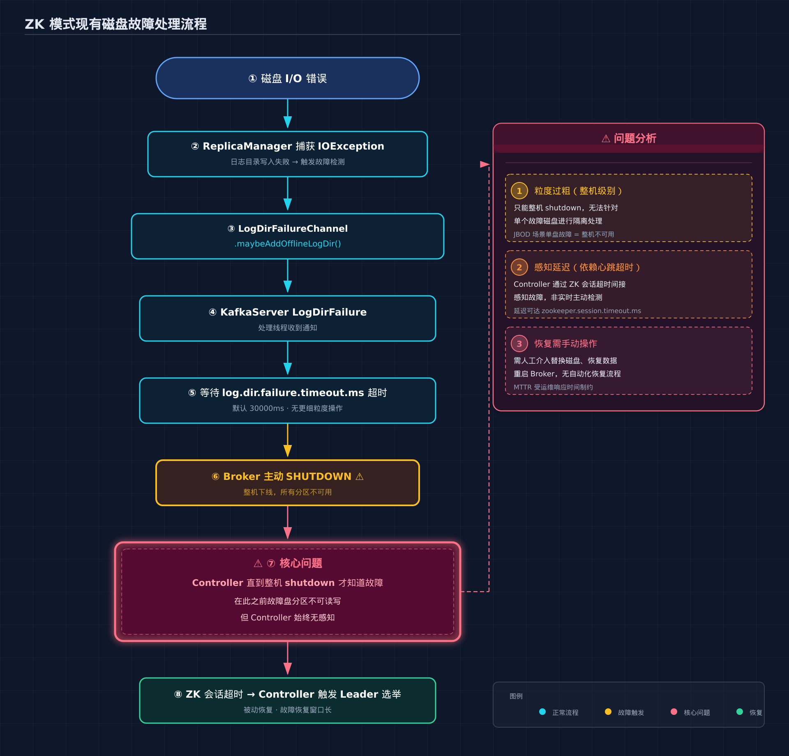
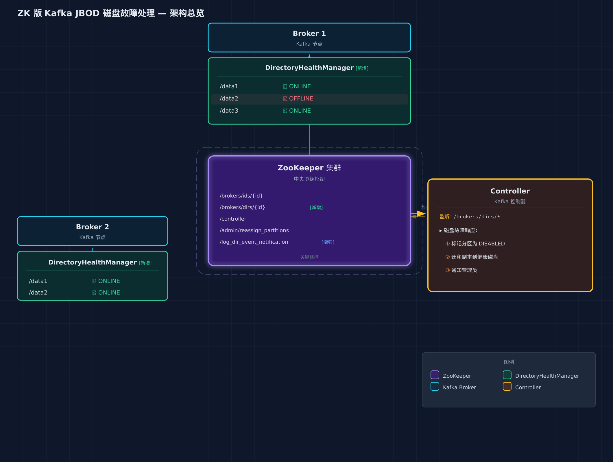
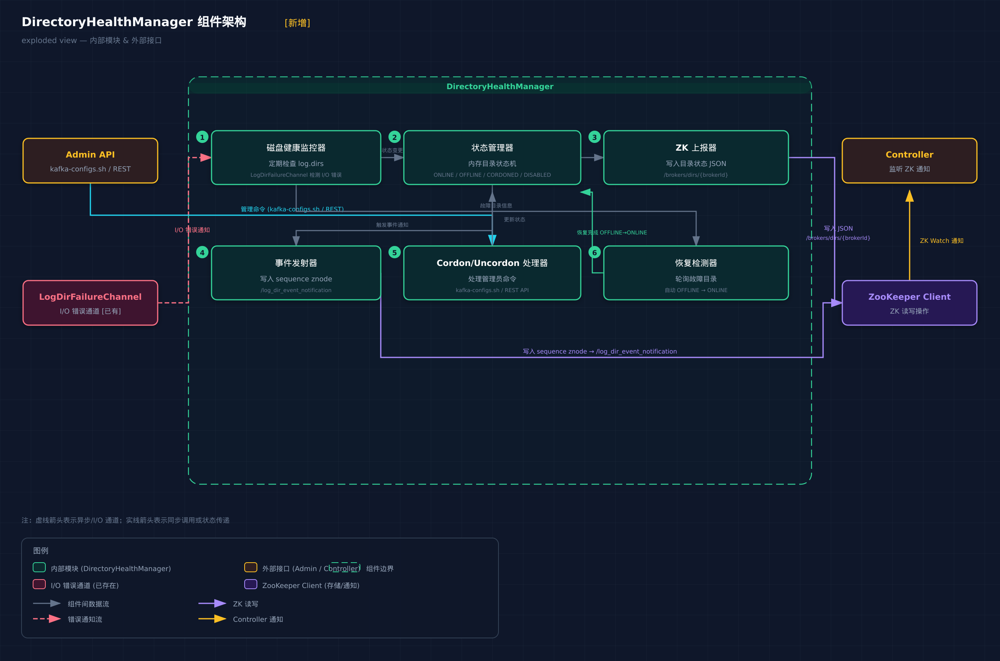
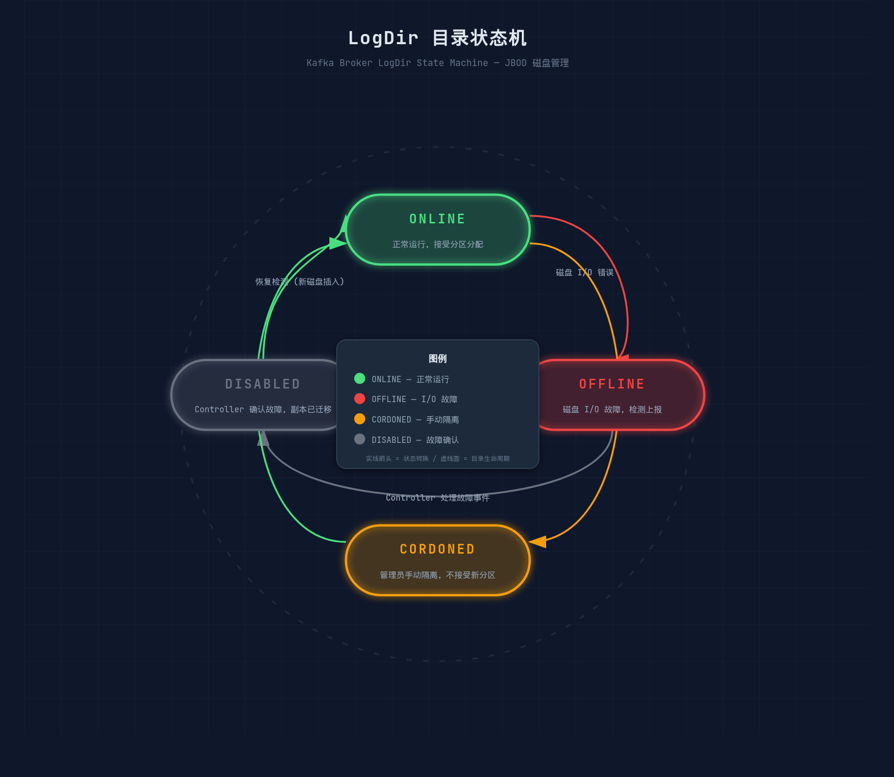
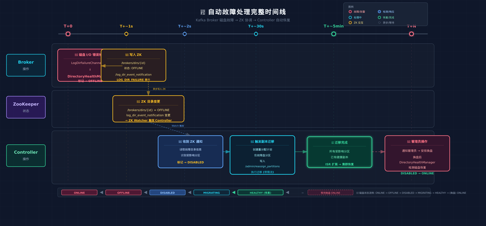
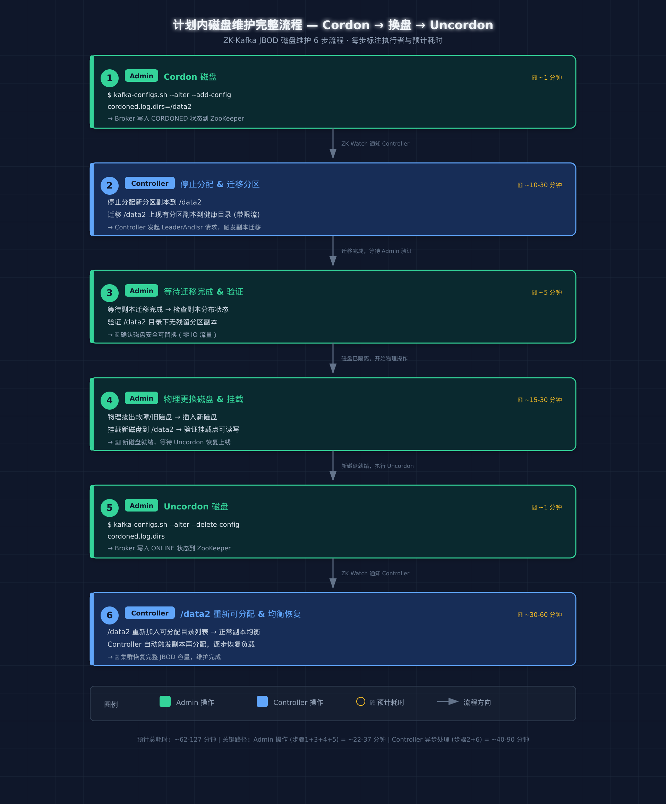

📑 目录
1. 背景与动机
1.1 KIP-1066 在 KRaft 模式下的实现
Apache Kafka 4.3.0 引入的 KIP-1066 · Cordon Brokers & Log Directories 为 KRaft 模式下的 JBOD 集群提供了一套完整的磁盘故障处理机制：
cordoned.log.dirs配置：允许管理员将特定 log 目录标记为“隔离”状态。被 Cordon 的目录不会接收新的分区分配。- 分配感知：Controller 通过
AssignReplicasToDirsRPC 收集每个 broker 上的分区-目录映射关系，故障发生时精确知道哪些副本受影响。 - 心跳携带故障信息：Broker 在心跳请求中携带故障目录的 UUID 列表（
DirectoryId），Controller 收到后触发受影响的副本重分配。 DirectoryEventManager：Broker 端的新组件，批量聚合和上报目录分配事件与故障事件。
KIP-1066 的核心设计理念：精确感知（不仅知道 broker 是否存活，还知道每个目录的健康状态）、精确迁移（只迁移故障目录上的副本，不影响同 broker 上其他健康目录）、运维友好（提供 cordoned.log.dirs 作为手动隔离入口）。
1.2 ZK 模式为什么需要自己的方案
很多生产集群仍运行在 Kafka 2.7.x / 2.8.x + ZooKeeper 架构下（如 Confluent Platform 6.x 或自建集群），短期内无法直接升级到 KRaft。这些集群面临同样的 JBOD 磁盘故障问题：
- 一块磁盘故障 → Broker 感知到
LogDirFailureChannel异常 - ZK 模式下没有
DirectoryId/AssignReplicasToDirs概念 - Controller 只能感知到“broker 掉线”（心跳超时），无法感知“broker 还活着但某个目录挂了”
实际生产痛点：
- 磁盘故障 ≠ Broker 宕机：Broker 进程仍在运行，其他磁盘正常工作，但故障盘上的副本处于离线状态。
- Controller 无感知：看不到部分磁盘异常，导致 ISR 收缩但无副本迁移。
- 恢复依赖手动：传统做法是手动停止 broker → 更换磁盘 → 重启 → 等待副本均衡，期间整台 broker 不可用。
本方案旨在：在不引入 KRaft 的前提下，基于 ZooKeeper 的元数据通道，设计一套面向 ZK 模式 Kafka 的 JBOD 磁盘故障自动感知、隔离、迁移与恢复方案。
2. 现有能力分析：ZK 版 Kafka JBOD 故障处理现状
2.1 当前 ZK 架构下的磁盘故障处理流程
在 ZK 模式中，当一块磁盘发生 I/O 错误时，现有的处理链路是：

核心问题：直到 broker 整机 shutdown，Controller 才知道有问题。在此之前，故障盘上的 Leader 分区处于不可读写状态，但 Controller 不会触发 Leader 切换。
2.2 ZooKeeper 中的关键 Znode 路径
| Znode 路径 | 存储内容 | 变更频率 |
|---|---|---|
/brokers/ids/{brokerId} | Broker 注册信息（host, port, endpoints, jmx_port 等） | Broker 启动时创建，停机时删除 |
/brokers/topics/{topic}/{pid}/state | 分区 Leader/ISR 信息 | Leader 变更、ISR 变更时更新 |
/controller | 当前 Controller broker ID + epoch | Controller 选举时更新 |
/admin/reassign_partitions | 分区重分配 JSON，Controller 监听此节点 | 用户触发 reassign 时创建/更新 |
/log_dir_event_notification | LogDir 事件通知（Kafka 2.7+ 引入） | 目录异常时写入 sequence node |
2.3 现有机制的不足
| 维度 | KRaft (KIP-1066) | ZK 模式（现状） |
|---|---|---|
| 故障粒度 | 目录级别（Directory UUID） | Broker 级别（整机） |
| 故障感知 | 心跳携带故障目录列表 | 只有心跳超时才知道 |
| 副本迁移 | 仅迁移故障目录上的副本 | 整机下线 → 全部副本迁移 |
| 手动隔离 | cordoned.log.dirs 配置 | 无内置机制 |
| 副本分布感知 | AssignReplicasToDirs RPC | 无（/log_dir_event_notification 仅限迁移场景） |
| 恢复流程 | Uncordon 后自动重新分配 | 手动替换磁盘 → 重启 → 等待均衡 |
3. 方案设计
3.1 总体架构
核心思路：利用 ZooKeeper 作为 Broker ↔ Controller 之间的元数据通信通道，新增目录级别的故障报告机制，让 Controller 在 Broker 仍存活时就能感知到磁盘故障并采取行动。

3.2 新增 ZK Znode 协议
3.2.1 /brokers/dirs/{brokerId} — 目录健康状态节点
路径：/brokers/dirs/{brokerId}
类型：Persistent（由 Broker 在启动时创建，运行时更新）
内容格式（JSON）：
{
"version": 1,
"brokerId": 1,
"directories": [
{
"path": "/data/kafka/data1",
"state": "ONLINE",
"partitions": 42,
"lastTransition": 1716800000000
},
{
"path": "/data/kafka/data2",
"state": "OFFLINE",
"partitions": 35,
"lastTransition": 1716800005000,
"failureReason": "IOException: Input/output error"
},
{
"path": "/data/kafka/data3",
"state": "CORDONED",
"partitions": 28,
"lastTransition": 1716800100000
}
]
}目录状态枚举：
| 状态 | 含义 | 触发条件 |
|---|---|---|
ONLINE | 正常运行 | 启动时检测，或从 OFFLINE 恢复 |
OFFLINE | 磁盘 I/O 失败 | LogDirFailureChannel 检测到异常 |
CORDONED | 管理员手动隔离 | 运维通过工具/API 设置 |
DISABLED | 已被 Controller 标记为不可用 | Controller 确认故障后写入 |
3.2.2 /log_dir_event_notification — 事件通知增强
Kafka 2.7+ 已有 /log_dir_event_notification 节点（用于 ZK→KRaft 迁移兼容）。本方案对其语义进行增强：
// Sequence Znode 内容
{
"brokerId": 1,
"eventType": "LOG_DIR_FAILURE",
"failedDirs": [
{
"path": "/data/kafka/data2",
"failureTime": 1716800005000,
"failureReason": "IOException"
}
]
}事件类型：
| 事件类型 | 触发时机 | Controller 行为 |
|---|---|---|
LOG_DIR_FAILURE | 磁盘故障首次检测 | 标记目录 OFFLINE，触发副本迁移 |
LOG_DIR_RECOVERY | 磁盘恢复 | 标记目录 ONLINE，允许分配副本 |
LOG_DIR_CORDON | 管理员手动 Cordon | 标记目录 CORDONED，不分配新副本 |
LOG_DIR_UNCORDON | 管理员手动 Uncordon | 恢复目录为 ONLINE |
3.3 Broker 端故障检测组件
3.3.1 DirectoryHealthManager（新增）
在 Kafka 2.7.x Broker 端新增一个轻量级的管理器组件，不改变现有 ReplicaManager 的核心逻辑：

核心职责：
- 监听故障：复用现有的
LogDirFailureChannel（Kafka 2.7 已有），捕获磁盘 I/O 异常。 - 维护状态：在内存中维护每个
log.dir的状态机（ONLINE → OFFLINE → DISABLED → ONLINE）。 - 上报 ZK：
- 每隔 30 秒全量刷新
/brokers/dirs/{id}节点内容。 - 状态变更时立即写入
/log_dir_event_notification事件节点。
- 每隔 30 秒全量刷新
- 不阻塞 Broker：ZK 写入失败不会导致 Broker 崩溃，仅记录日志并重试。
3.3.2 配置项（新增）
| 配置项 | 默认值 | 说明 |
|---|---|---|
dir.health.report.interval.ms | 30000 | 目录状态上报间隔（毫秒） |
dir.health.auto.shutdown.enable | false | 是否启用故障目录自动 shutdown（兼容旧行为） |
dir.health.zk.report.max.retries | 3 | ZK 上报最大重试次数 |
3.4 Controller 端响应逻辑
3.4.1 DirFailureHandler（Controller 端新增）
在 ZK 模式 Controller 中新增一个子模块，监听 /brokers/dirs/ 和 /log_dir_event_notification 的变更：
算法：DirFailureHandler.onDirectoryFailure(brokerId, failedDirs)
输入：brokerId, List[FailedDirectory]
输出：分区重分配计划
1. FOR each failedDir in failedDirs:
2. 在内存中标记 brokerId.failedDir 为 DISABLED
3. 查询该 broker 上 failedDir 中所有分区副本
4. FOR each partition in affectedPartitions:
5. IF partition.leader 位于 failedDir:
6. 从 ISR 中选择一个不在 failedDir 的副本作为新 Leader
7. 发起 LeaderAndIsr 请求，完成 Leader 切换
8. END IF
9. END FOR
10. FOR each partition in affectedPartitions:
11. 从集群中选择健康 broker 的健康目录作为迁移目标
12. 生成 reassign_partitions JSON
13. 写入 /admin/reassign_partitions 触发迁移
14. END FOR
15. END FOR
恢复流程（磁盘修复后）：
1. Broker 检测到磁盘恢复 -> 写入 LOG_DIR_RECOVERY 事件
2. Controller 将目录状态从 DISABLED 改为 ONLINE
3. 新创建的 partition 可以正常分配到该目录3.4.2 状态机设计

3.5 副本迁移策略
3.5.1 迁移目标选择算法
算法：selectReassignmentTarget(failedDir, affectedPartitions)
1. 候选 brokers = 所有 ISR 正常的 broker(排除故障磁盘所在 broker)
2. 对每个候选 broker:
a. 只考虑其 ONLINE 状态的目录
b. 按以下权重排序（低权重优先）：
- 该 broker 上现有副本数（负载均衡）
- 该目录上现有副本数（目录级平衡）
- 是否与当前 partition 的其他副本在同一 rack（rack-aware）
3. 为每个 affected partition 选择权重最低的 (broker, directory) 对
4. 输出 reassign_partitions JSON3.5.2 迁移节奏控制
| 配置项 | 默认值 | 说明 |
|---|---|---|
dir.failure.reassign.throttle.bytes.per.sec | 50 MB/s | 单分区迁移带宽限制 |
dir.failure.reassign.max.concurrent | 5 | 最大并发迁移分区数 |
dir.failure.reassign.batch.size | 10 | 每批提交的重分配分区数 |
3.6 Cordon / Uncordon 运维操作原语
管理员通过修改 broker 的 server.properties 或运行时 Admin API 来执行 Cordon/Uncordon：
# 方式一：配置文件 + 滚动重启（推荐用于计划内维护）
cordoned.log.dirs=/data/kafka/data3,/data/kafka/data4
# 方式二：运行时 Admin API（新增，无需重启 Broker）
# Cordon 目录
kafka-dirs.sh --cordon --bootstrap-server localhost:9092 \
--dirs /data/kafka/data3
# Uncordon 目录
kafka-dirs.sh --uncordon --bootstrap-server localhost:9092 \
--dirs /data/kafka/data3
# 查看目录状态
kafka-dirs.sh --describe --bootstrap-server localhost:9092
4. 完整故障处理流程
4.1 自动故障处理时间线

5. 与 KRaft 方案的对比
| 维度 | 本方案（ZK 模式） | KIP-1066（KRaft 模式） |
|---|---|---|
| 通信通道 | ZooKeeper Znode + Watcher | KRaft Heartbeat RPC |
| 目录标识 | 文件系统路径 | UUID（DirectoryId） |
| 分配感知 | ZK 事件 + Controller 内存查询 | AssignReplicasToDirs RPC |
| 故障上报延迟 | <1s（Watcher 触发） | <Heartbeat 间隔 |
| Cordon 操作 | 配置文件 + 新增 CLI 工具 | 配置文件（原生支持） |
| 迁移粒度 | 分区级别（同 KRaft） | 分区级别 |
| 实现复杂度 | 中（复用 ZK 基础设施） | 高（需完整 KRaft 元数据层） |
| 依赖 | ZooKeeper Ensemble | KRaft Quorum |
6. 实现路径与风险
6.1 改造范围
| 模块 | 文件/类 | 改动类型 | 改动量估计 |
|---|---|---|---|
| Broker | DirectoryHealthManager.scala | 新增 | ~400 行 |
| Broker | KafkaServer.scala | 修改 | ~50 行（启动/关闭 lifecycle） |
| Broker | LogDirFailureChannel.scala | 修改 | ~30 行（增加回调钩子） |
| Controller | DirFailureHandler.scala | 新增 | ~500 行 |
| Controller | KafkaController.scala | 修改 | ~100 行（注册 ZK Watcher） |
| Controller | ReassignPartitionsCommand.scala | 修改 | ~100 行（目录感知） |
| CLI | kafka-dirs.sh / DirCommand.scala | 新增 | ~300 行 |
| Config | KafkaConfig.scala | 修改 | ~20 行（新配置项） |
| Tests | 单元 + 集成 + 系统测试 | 新增 | ~1500 行 |
总改动量估计：~3000 行（含测试），对 Kafka 核心代码侵入性小，主要新增模块。
6.2 兼容性考虑
- 向后兼容：未启用
dir.health.report.interval.ms时，行为与旧版完全一致。 - ZK 节点：新增的
/brokers/dirs/{id}在旧版 Kafka 不存在，不会产生冲突。 - 滚动升级：先升级 Controller，再升级 Broker。升级期间旧 Broker 不写入
/brokers/dirs/，不影响集群运行。 - 与 Confluent Platform：方案不修改 Kafka 核心通信协议，与 Confluent 的 Schema Registry、Kafka REST Proxy 等组件兼容。
6.3 测试策略
- 单元测试：
DirectoryHealthManager状态机测试、DirFailureHandler迁移逻辑测试。 - 集成测试：使用
kafka.utils.TestUtils启动嵌入式 ZK + Kafka 集群，模拟磁盘故障（注入 I/O 异常）。 - 系统测试：在真实 JBOD 集群上：
- 测试场景 1：单盘故障 → 自动 Leader 切换 + 副本迁移
- 测试场景 2：多盘同时故障 → 正确标记 + 不重复迁移
- 测试场景 3：Cordon → 手动清空 → 换盘 → Uncordon → 恢复
- 测试场景 4：网络分区下 ZK 写失败 → Broker 不崩溃，重试机制正确
- 性能测试：测量 ZK Watcher 触发延迟、迁移带宽对生产流量影响。
7. 运维手册
7.1 监控告警
| 指标 | 告警阈值 | 含义 |
|---|---|---|
kafka.dir.offline.count | > 0 | 有目录处于 OFFLINE/DISABLED 状态 |
kafka.dir.cordoned.count | > 0 for 7d | Cordon 目录超过 7 天未处理 |
kafka.dir.reassign.pending | > 100 for 30min | 积压的待迁移分区数 |
kafka.dir.zk.write.failures.rate | > 0.1/s | ZK 写入失败率异常 |
7.2 常见操作
场景 A：生产环境磁盘故障（自动处理）
# 1. 确认故障
kafka-dirs.sh --describe --bootstrap-server localhost:9092
# 预期输出：
# Broker 1:
# /data/kafka/data1 ONLINE 42 partitions
# /data/kafka/data2 DISABLED 35 partitions (auto-detected)
# /data/kafka/data3 ONLINE 28 partitions
# 2. 检查迁移进度
kafka-reassign-partitions.sh --verify \
--reassignment-json-file /tmp/auto-reassign.json \
--bootstrap-server localhost:9092
# 3. 迁移完成后，更换磁盘
# 4. 重启 Broker，磁盘自动恢复为 ONLINE
场景 B：计划内磁盘维护（Cordon）

# 1. Cordon 目录
kafka-dirs.sh --cordon --bootstrap-server localhost:9092 \
--dirs /data/kafka/data3
# 2. 生成迁移计划
kafka-reassign-partitions.sh --generate \
--bootstrap-server localhost:9092 \
--topics-to-move-json-file topics.json \
--broker-list "0,1,2" > reassign.json
# 3. 执行迁移
kafka-reassign-partitions.sh --execute \
--reassignment-json-file reassign.json \
--bootstrap-server localhost:9092
# 4. 等待迁移完成后，安全下线磁盘
# 5. 更换硬件后重启
# 6. Uncordon
kafka-dirs.sh --uncordon --bootstrap-server localhost:9092 \
--dirs /data/kafka/data3
场景 C：误报处理
# 如果是误报（短暂 I/O 抖动），手动恢复目录状态
# 注意：只有确信磁盘健康时才执行
kafka-dirs.sh --force-online --bootstrap-server localhost:9092 \
--dirs /data/kafka/data2 --reason "False positive: NFS hiccup"
7.3 故障排查
| 症状 | 可能原因 | 排查步骤 |
|---|---|---|
| 目录一直处于 OFFLINE，没有自动迁移 | Controller 未监听 /log_dir_event_notification | 检查 Controller 日志关键词 "DirFailureHandler" |
| 迁移慢或卡住 | throttle 太低 / 目标磁盘空间不足 | 检查 dir.failure.reassign.throttle.bytes.per.sec 和目标磁盘使用率 |
| ZK 写入频繁失败 | ZK 连接数不足 / 网络延迟高 | 检查 zookeeper.session.timeout.ms 和 ZK 负载 |